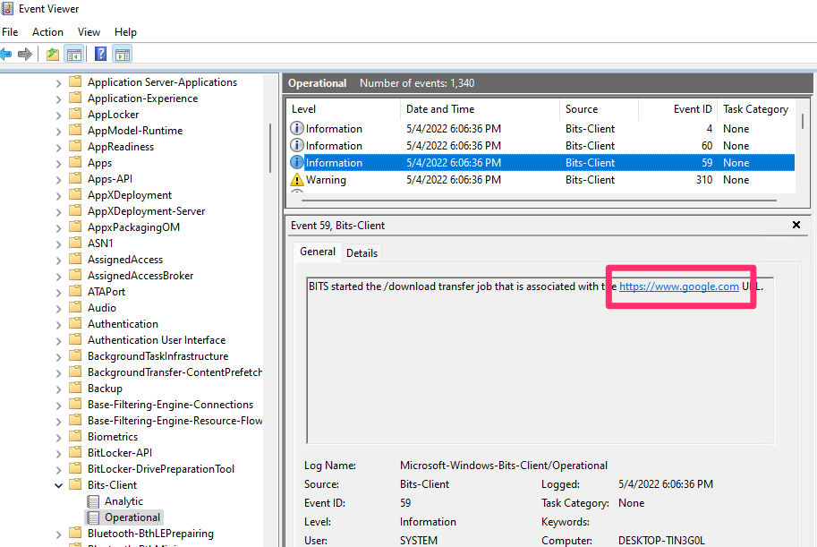

<!-- .slide: class="title" --> # Event logs ## Analyzing logs for detection and forensics --- <!-- .slide: class="content " --> ## Module overview * Event logs are one of the most useful sources of evidence in DFIR * We will cover Windows and Syslog event logs.
<!-- .slide: class="title" --> # Windows Event Logs --- <!-- .slide: class="content" --> ## Windows Event Logs * Stored in files with extension of `*.evtx` typically in `C:\Windows\System32\WinEVT\Logs\*.evtx` * File format features: * `Rollover` - File is divided into chunks and new chunks can overwrite older chunks * Binary XML format provides compression * Structured records with strong types --- <!-- .slide: class="content" --> ## Parsing EVTX * The event message is actually written in XML but Velociraptor convert it into a JSON object to make it easier to filter specific fields. * Event significant fields * `Provider`, `Channel`, `Computer` - this represents the source of the message * `Event ID` - An index into the message table identifying the type of this event * `EventRecordID` - The ID of this message within the evtx file. * `UserData` - An application specific blob of structured data --- <!-- .slide: class="content" --> ## Event Messages - Where are they? * Windows Event Logs architecture does NOT store the event message in the evtx file! * This allows for event message internationalization * Saves some small amount of space in the evtx files themselves * But mostly makes it difficult to analyze offline * Grabbing all the EVTX files off the system may result in loss of event messages! --- <!-- .slide: class="full_screen_diagram" --> ### Internationalization of the log message  <img src="i8n_log_message_user_data.png" style="bottom: 0px" class="inset" /> --- <!-- .slide: class="full_screen_diagram" --> ### The Event description is missing from the evtx file. The event description message contains vital context about what the event actually means. Without the message we would need to search for the event id. <img src="event_description.png" class="mid-height" /> --- <!-- .slide: class="content" --> ## Event message search <div class="container"> <div class="col"> If you copied the event log files off the system and do not have access to the messages, you will need to figure out what does the event id mean. Some common event ids are documented publicly. </div> <div class="col">  </div> --- <!-- .slide: class="content" --> ## Deriving event messages * Using the `provider`, `channel` and `computer name` lookup the registry key `HKLM\SYSTEM\CurrentControlSet\` `Services\EventLog\<channel>\<provider>` * Read the value `EventMessageFile`. * This will point at a DLL path, open the resource section of this dll for a Message Table resource. * This will produce a formatted string. * Interpolate the UserData section into the string. --- <!-- .slide: class="content" --> ## Deriving event messages * Open the DLL * Locate the resource section in the PE file of this dll, searching for a Message Table resource. * A `MESSAGE_TABLE` resource is a list of strings - the Event ID is an index into this table. * This will produce a string with expansion directives like `%1`, `%2` etc. Interpolate the UserData section into the string. --- <!-- .slide: class="full_screen_diagram" --> ### Resolving a message from an event  --- <!-- .slide: class="content small-font" --> ## Resolving Messages * Velociraptor can automatically follow this process when parsing event logs using the `parse_evtx()` plugin. Notice the `UserData` is expanded into the messages. <img src="parse_evtx_messages.png" class="mid-height" /> --- <!-- .slide: class="content" --> ## What could go wrong? * If you just collect the EVTX files from one system to another you will lose access to message tables, because the messages are in DLL files scattered across the entire system. * If an application is uninstalled, its message DLLs will be removed and earlier events are not able to be displayed any more. **It is always better to parse the event logs on the host than to transfer evtx files.** --- <!-- .slide: class="content" --> ## Event Message databases * The https://github.com/Velocidex/evtx-data repository contains sqlite databases of many known message tables collected from different systems. * The [dumpevtx](https://github.com/Velocidex/evtx) tool can resolve messages from these databases and the sqlite databases. --- <!-- .slide: class="content" --> ## References * https://www.appliedincidentresponse.com/windows-event-log-analyst-reference/ * https://docs.microsoft.com/en-us/windows/security/threat-protection/auditing/audit-logon --- <!-- .slide: class="content" --> ## Disabling event logs * Event logs can be easily disabled!  --- <!-- .slide: class="full_screen_diagram" --> ## What is BITS? Why should we care?  --- <!-- .slide: class="content" --> ## What is BITS? <div class="container"> <div class="col"> BITS activity is visible in the logs ```text bitsadmin.exe /transfer /download /priority foreground https://www.google.com c:\Users\Administrator\test.ps1 ``` </div> <div class="col">  </div> </div> --- <!-- .slide: class="content" --> ## Exercise - How can we detect this? 1. Use `ProcMon` to understand what registry keys are changing 2. Write a VQL artifact to detect if a log is enabled or disabled. --- <!-- .slide: class="content" --> ## Solution: What is the setting?  --- <!-- .slide: class="content" --> ## Exercise: Detect disabled logs * Write an artifact that reports the state of each log channel (enabled/disabled) * Use the `Microsoft-Windows-Bits-Client/Operational` channel as an example --- <!-- .slide: class="content" --> ## Solution <div class="solution solution-closed"> ```sql LET Key = "HKLM/Software/Microsoft/Windows/CurrentVersion/Winevt/Channels/*" SELECT *, Key.OSPath.Basename AS ChannelName FROM read_reg_key(globs=Key) WHERE ChannelName =~ "bits" ``` <img src="event_disabled_vql.png" style="width: 70%" /> </div> --- <!-- .slide: class="content small-font" --> ## Exercise: Convert to an artifact Write an artifact that can be used to hunt for enabled or disabled event logs.
<!-- .slide: class="title" --> # Detection engineering --- <!-- .slide: class="content" --> ## Velociraptor vs. SIEM * Velociraptor's unique approach: * Shift the queries to the endpoint * Have access to many sources of data * Relay back positive hits * Increase signal to noise * This is very different from the traditional SIEM * Central store of all logs - data mining * Rely on event logs to be forwarded * Need to select which logs to forward - tradeoff * Query over the entire deployment --- <!-- .slide: class="content" --> ## Event Log based detection * Traditional SIEM only has access to forwarded event logs * Event logs are usually too many to manually inspect * Traditional Detection is all about rules to detect anomalous activity in log files. * Typically limited by the quality and type of the log source * Can be fragile and easily bypassed --- <!-- .slide: class="content small-font" --> ## Sigma - a rule language for logs [Generic Signature Format for SIEM Systems](https://github.com/SigmaHQ/sigma) * There are many SIEM systems and each typically have their own query language (VQL, KQL, EQL etc). * Sigma was designed to be a portable rule definition language that makes exchanging detection rules easier. * The Sigma compiler converts the rule to a target query language. * Doesnt really work in many case (not that portable) * Sigma is not really well defined leaving many fields to be interpreted by the compilers. --- <!-- .slide: class="content" --> ## Some Sigma examples https://github.com/SigmaHQ/sigma#examples * Many rules detecting various signals * Some are trivial to bypass * Some are stronger --- <!-- .slide: class="content small-font" --> ### Some Sigma examples * Command line based rules <img src="commandline_based_sigma.png" style="height: 500px"> --- <!-- .slide: class="content small-font" --> ### Some Sigma examples * Hash based rules <img src="weak_sigma_rules.png" style="height: 500px"> --- <!-- .slide: class="content small-font" --> ## Sigma limitations * Because Sigma is not a matching engine itself, it is hard to know what it does in more complicated rules. * Sigma notation can be too abstract and refer to data that is not available in practice. * Generally try to stick to well used rules * Because the Sigma standard is not well defined there are many rules that dont work in the target query. * For more complex rules, look at the compiled rules (e.g. in EQL) to see if they do what you want. * Generally a high False Positive rate * Sigma rules need to consider the available log sources and target platform. --- <!-- .slide: class="content small-font" --> ## Sigma rule tips * Write better Sigma rules: * Rather than matching large command lines, match smaller fragments. Command line order can vary * Include short flag and long flags * Use best available log source (e.g. Powershell script block logging over commandline matching). * Use OriginalFilename over ImageName when possible (robust against simple rename). * Use Imp hash over MD5 hashes - especially when signing is important. --- <!-- .slide: class="content small-font" --> ## Using Sigma With Velociraptor * Sigma is really designed to operate on forwarded event logs * This means most rules are written to handle common log sources * Usualy the Sigma compiler converts the rule to a target language. * There are some tools that apply the sigma rules to raw Evtx files: * [Hayabusa](https://github.com/Yamato-Security/hayabusa) is a Windows event log fast forensics timeline generator and threat hunting tool. This is available via the `Windows.EventLogs.Hayabusa` artifact. * [Chainsaw](https://github.com/countercept/chainsaw) provides a powerful ‘first-response’ capability to quickly identify threats within Windows forensic artefacts such as Event Logs and MFTs. Available through the `Windows.EventLogs.Chainsaw` artifacts. --- <!-- .slide: class="content small-font" --> ## Exercise: Hayabusa * Collect the `Windows.EventLogs.Hayabusa` on your machine. * What type of alerts do you see? --- <!-- .slide: class="full_screen_diagram" --> ## Exercise: Hayabusa  --- <!-- .slide: class="full_screen_diagram" --> ## Exercise: Hayabusa There are many false positives but a `group by` helps! <img src="triage_hayabusa.png" style="height: 400px"> --- <!-- .slide: class="content" --> ## The EVTX Hunter * A highly flexible artifact to search the event logs * Can be used in many ways: 1. Search for any events that mention a compromised user. 2. Time box events around the time of interest. 3. Implements allowlist IOC 4. VSS search integrated
<!-- .slide: class="content" --> ## PE Files * In Windows, executables are stored in a [Portable Executables (PE)](https://learn.microsoft.com/en-us/windows/win32/debug/pe-format) file format. * PE files contain some interesting properties: - Divided into sections - Import Address Table (IAT) - Export Address Table (EAT) - Resources - VersionInformation * PE Files can be signed using Authenticode - Some things like drivers require signatures - EDRs typically trust signed binaries more than unsigned. - Authenticode hash does not cover the whole file! --- <!-- .slide: class="full_screen_diagram" --> ### PE File structure <img src="pe_structure.png" style="height: 500px"> [msdn-magazine](https://learn.microsoft.com/en-us/archive/msdn-magazine/2002/february/inside-windows-win32-portable-executable-file-format-in-detail) --- <!-- .slide: class="content" --> ## Authenticode - signing PE files * The [Authenticode standard](https://download.microsoft.com/download/9/c/5/9c5b2167-8017-4bae-9fde-d599bac8184a/authenticode_pe.docx) describes how a PE file can be signed. * An `Authenticode Hash` is constructed over a subset of the file covering the critical parts required for execution. * Not all the file is covered in the authenticode hash! * This means that it is trivial to change the file hash and keep the authenticode hash the same! --- <!-- .slide: class="content" --> ## Authenticode - signing via Catalogue * In Windows there is another mechanism for signing many files: `Catalogue signing` * This works by signing a list of trusted hashes and storing in `C:\Windows\system32\CatRoot\{F750E6C3–38EE-11D1–85E5–00C04FC295EE}` * Details here [Verifying executables on Windows](https://docs.velociraptor.app/blog/2021/2021-06-09-verifying-executables-on-windows-1b3518122d3c/) --- <!-- .slide: class="content" --> ## Parsing PE Files * In Velociraptor, PE files can be parsed from disk or memory. * PE files are parsed using the `parse_pe()` function. * Authenticode signature is verified using the `authenticode()` function ```sql LET Filename = "c:/windows/notepad.exe" SELECT authenticode(filename=Filename), parse_pe(file=Filename) FROM scope() ``` --- <!-- .slide: class="full_screen_diagram" --> ## Parsing PE Files  --- <!-- .slide: class="content" --> ## Exercise: Manipulating Driver hashes * Drivers need to be signed to be able to load into the system * Many drivers are vulnerable so attackers can bring the driver with them to gain access to kernel. * In this exercise we play with inserting kernel drivers * Make sure sysmon is installed by collecting the `Windows.Sysinternals.SysmonInstall` artifact --- <!-- .slide: class="content small-font" --> ## Exercise: Manipulating Driver hashes * Download `winpmem` from https://github.com/Velocidex/WinPmem/releases * Extract the driver from the program: ``` winpmem_mini_x64_rc2.exe -d test.sys ``` * Create a service for the driver and start it ``` sc.exe create testpmem binPath=C:\Users\Administrator\Downloads\test.sys type=kernel sc.exe start testpmem ``` --- <!-- .slide: class="full_screen_diagram" --> ## Exercise: Manipulating Driver hashes  --- <!-- .slide: class="full_screen_diagram" --> ## Exercise: Manipulating Driver hashes Modify the binary by changing bytes that are not covered by the authenticode hash  --- <!-- .slide: class="full_screen_diagram" --> ## Exercise: Manipulating Driver hashes Reload the driver and examine the Sysmon log  --- <!-- .slide: class="content" --> ## Hashes and PE files * Hashes are considered very low quality indicators * Not all created equal: * Full file hashes can be changed without affecting Authenticode * Imp hashes are more reliable in this case. * Example of weaker rules: https://github.com/SigmaHQ/sigma/tree/master/rules/windows/driver_load * Can be strengthened by using imp hashes instead.  --- <!-- .slide: class="content" --> ## Weak Hash based detection rule <img src="weak_sigma_rules.png" style="height: 450px"> --- <!-- .slide: class="content" --> ## Stronger detection rule <img src="stronger_sigma_rule.png" style="height: 450px">
<!-- .slide: class="title" --> # Syslog logs ## Linux/Unix line based event logs --- <!-- .slide: class="content" --> ## Line based logging * On Linux line based logging is very common. * Logs typically are **unstructurd** * Each application emits logs in free form text. * Makes it very difficult to accurately extract data Example - Use Grok to detect SSH login events. * Common compromise sequence: * Attackers compromise one machine through a vulnerability, or password guessing * Due to unsecured ssh keys, they can laterally move to other machines in the network. --- <!-- .slide: class="content" --> ## Parsing SSH login events * Linux systems typically use syslog for logging * Line based unstructured logs * Difficult to query across systems. * events are stored in /var/log/auth.log * Looks similar to <img src="ssh_log_sample.png" style="bottom: 0px" /> --- <!-- .slide: class="content" --> ## Grok for parsing syslogs * Grok is a way of applying regular expressions to extract structured information from log files. * Used by many log forwarding platforms such as Elastic for example: ``` %{SYSLOGTIMESTAMP:Timestamp} %{SYSLOGHOST:logsource} \w+\[\d+\]: %{DATA:event} %{DATA:method} for (invalid user )?%{DATA:user} from %{IPORHOST:ip} port %{NUMBER:port} ssh2: %{GREEDYDATA:Key} ``` --- <!-- .slide: class="content small-font" --> ## Let's use VQL to parse ssh events Read the first 50 lines from the auth log ``` Jun 25 18:56:08 devbox sshd[31872]: Accepted publickey for mic from 192.168.0.112 port 52323 ssh2: RSA SHA256:B4123453463443566345 ```  --- <!-- .slide: class="content" --> ## Filter lines and apply Grok * Grok expressions for common applications are well published. * You can figure out expressions for new log sources using online tools. https://grokdebugger.com/  --- <!-- .slide: class="content" --> ## Parsing log lines with Grok * Applying the grok expression will match a dict * Use foreach to expand the dict into columns  --- <!-- .slide: class="content" --> ## Carving SSH auth logs * SSH auth logs are often deleted from the system (either expired or maliciously) * It is possible to carve for auth logs from the raw device. * Use a fast but loose regular expression to box the syslog line * Then apply the more accurate Grok parser to extract the line. * Use the `raw_file` accessor in Linux to carve the raw disk device. --- <!-- .slide: class="content" --> ## Exercise: Carving SSH auth logs * Develop an artifact to carve SSH auth logs * `Tip`: Create a very small sample for development by appending the read file to some junk data: ``` type C:\Windows\notepad.exe auth.log > test.dd ``` * Apply the artifact on your Linux system to recover authentication events.
<!-- .slide: class="content optional" data-background-color="antiquewhite" --> ## The Linux Journal Logs * Recent Linux systems use `systemd` * Logs are structured and incorporate indexes for fast searching. * You can view the logs with `journalctl` ``` journalctl --file /run/log/journal/*/*.journal ``` --- <!-- .slide: class="content optional small-font" data-background-color="antiquewhite" --> ## Exercise: Parsing Journal Logs: Execve * You can use `execve()` to run an external binary * Use `journalctl -o json --file X.journal` to read the journal file * Use `parse_jsonl()` to parse the output into structured data. --- <!-- .slide: class="content optional small-font" data-background-color="antiquewhite" --> ## Exercise: Parsing Journal Logs: Natively * It is useful to be able to parse the log file directly. * Write a VQL parser for the Journal log file. * The format is documented https://www.freedesktop.org/wiki/Software/systemd/journal-files/ * Get a sample file from https://github.com/Velocidex/velociraptor/raw/master/artifacts/testdata/files/system.journal --- <!-- .slide: class="content optional small-font" data-background-color="antiquewhite" --> ## Exercise: Parsing Journal Logs * Structure is: 1. Header: Provides metadata 2. Object Header: Provides Type and Size * Trick: Size is 8 byte aligned. 3. Different Objects follow depending on Type. 4. We only care about: * DATA_OBJECT: Contains one item * ENTRY_OBJECT: Contains one log line - refers to multiple DATA_OBJECT. --- <!-- .slide: class="content optional small-font" data-background-color="antiquewhite" --> ## Exercise: Parsing Journal Logs * Parse header <div class="solution solution-closed"> ``` LET JournalProfile = '''[ ["Header", "x=>x.header_size", [ ["Signature", 0, "String", { "length": 8, }], ["header_size", 88, "uint64"], ["arena_size", 96, "uint64"], ["n_objects", 144, uint64], ["n_entries", 152, uint64], ["Objects", "x=>x.header_size", "Array", { "type": "ObjectHeader", "count": "x=>x.n_objects", "max_count": 100000 }] ]], ``` </div> * Parse Object Headers <div class="solution solution-closed"> ``` ["ObjectHeader", "x=>x.size", [ ["Offset", 0, "Value", { "value": "x=>x.StartOf", }], ["type", 0, "Enumeration",{ "type": "uint8", "choices": { "0": OBJECT_UNUSED, "1": OBJECT_DATA, "2": OBJECT_FIELD, "3": OBJECT_ENTRY, "4": OBJECT_DATA_HASH_TABLE, "5": OBJECT_FIELD_HASH_TABLE, "6": OBJECT_ENTRY_ARRAY, "7": OBJECT_TAG, } }], ["flags", 1, "uint8"], ["__real_size", 8, "uint64"], ["__round_size", 8, "Value", { "value": "x=>int(int=x.__real_size / 8) * 8", }], ["size", 0, "Value", { "value": "x=>if(condition=x.__real_size = x.__round_size, then=x.__round_size, else=x.__round_size + 8)", }], ["payload", 16, Union, { "selector": "x=>x.type", "choices": { "OBJECT_DATA": DataObject, "OBJECT_ENTRY": EntryObject, } }] ]], ``` </div> * [Full solution](https://github.com/Velocidex/velociraptor/blob/master/artifacts/definitions/Linux/Forensics/Journal.yaml)
<!-- .slide: class="content" --> ## Review And Summary * Event logs are very important for Incident Response * The Windows Event logs format is structured, but does not contain critical information. * Using automated tools to apply detection logic on event logs helps to quickly identify an incident. * Hunting the EVTX logs can reveal important but unrelated information. --- <!-- .slide: class="content" --> ## Review And Summary * On Linux syslog events are not structured. * We can use `Grok` or regular expressions to extract information but this is fragile. * Syslog can be carved from disk - even after rotation. * Newer systems are using journal logs as well.